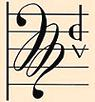

Web Page
|
|
|
Disk 1
St. Hildegard von Bingen: Symphonia (part)
[These peices were wirtten over 840 years ago]
Anonymous: Carmina Burana (selections)
[Bawdy songs by students and clergy, 11th, 12th
centuries]
South German: 1500s (selections)
[Typical pieces from the German late Renaisance]
|
1->7
9->13
15->21
|
Disk 2
Heinrich Schütz: Small Concert (1->4)
[H. Schütz practically invented the German
Baroque (with (a little help from the Italians)]
Johan C. Schieferdecker: Triumph
Johan C. Schieferdecker: Concerto IX g-Moll
[Until very recently Schieferdecker was known
only as "The guy who married Buxtehuda's ugly
daughter" to get a very desirable organist job.
Actually, he already had the job well before the
wedding, and there is no actual evidence she was
ugly - just too old for Bach, Handel and Matthison,
all in their 20s. Schiferdecker already had a
successful career and was probably near her age]
Heinrich I. Franz Biber: Sonata a 5
Heinrich I. Franz Biber: Batalia
[Biber was one of the truly great German Baroque
composers, yet is known today only by Barque
musicians, who have recorded a huge volume of his
works, many to be found in the Jon Stringer
collection]
Johan H. Schmelzer: Sonata con arie in C
[Austrian Schmelzer was one of the greatest
violinists and composers for violin of the middle
Baroque]
Carl Stamitz: Concerto #7
[Stamitz was a traveling virtuoso / composer in
the early Clasical period, known particularly for
clarinet and viola concertos]
|
1->4
6->11
13->18
20
22
24
26->28 |
Disk 3
Franz Schreker: Romantische Suite, Op,14
[Schreker was considered one of the two great
German opera composers, along with Strauss, and
was a famous music teacher. His father was Jewish,
so his career was totally destroyed and his music
no longer performed from 1928 until he died of a
stroke in 1934. Today he is increasingly perfomed,
and his most famous opera, Die Gezeichneten,
was performed by the Los Angeles Opera in 2010]
Horst Vessel: Raise the Flag (Horst Vessel Lied)
[These are the guys who destroyed Germany and
Austria as the center of European music]
Carl Orff Catulli Carmina
[The second of Orff's three "Scenic Cantatas",
Carmin Burana, Catuli Carmina, and
Trionfo di Afrodite]
|
1->4
5
7->11
|
Disk 4
Fawn: Midgard (selections)
[Fawn is one of the most famous Pagan bands
performing today, and also the most skilled in
Medieval and Folk music. They also leave their
electronics guy at home and travel as Acoustic,
doing concert performances of Medieval and Folk
music using authentic instruments, the same
instruments theyuse here]
Anonymous: Carmina Burana (selections)
[Bawdy songs by students and clergy, 11th, 12th
centuries]
Faun: Von den Elben (selections)
|
1->4
6->20
22->28
|
Disk 5
Various: Triumphs of Maximilian (Renaissance)
[a selection of pieces from the times of
Maximilian I, Holy Roman Emperor]
|
1->33
|
**Kraut: The Germans were called "Krauts" because their
sailing ships carried barrels of Sauerkraut to ward off scurvey. The
British also carried Sauerkraut until limes became available to them
and they became "Limies". The Spanish carried Potatoes for that purpose,
but somehow never got named for them.
|